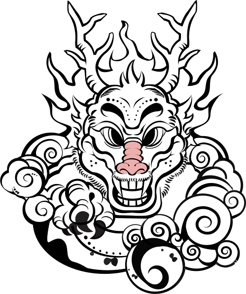

해안 지역에서 행해지던 무속 의례와 개인 중심의 재앙 해소 방식을 바탕으로 구성된 삼재풀이이다. 용왕신에게 정기적으로 제물을 올리고 치성을 드리며, 반복되는 의례를 통해 스스로 액을 다스리는 특징을 가진다.
흐름을 따르면서도, 감각과 믿음으로 스스로 해결하려는 방식.
이 방식은 재앙을 한 번에 없애기보다, 꾸준한 의례를 통해 불안을 천천히 흘려보내는 데 초점을 둡니다. 당신은 자신의 감각과 믿음을 바탕으로 상황을 받아들이며, 반복적인 실천을 통해 스스로 마음을 다스려 나갑니다.
풀이 방법
- 준비물
- 시루떡
- 인원
- 1인
- 방법
-
- 용왕신에게 1년 동안 칠성공을 드리기 위해 매달 한 번씩 시루떡을 쪄 제물로 올린다.
- 제물을 차린 뒤 절을 올리거나 축원을 외우며 치성을 드린다.


- 같은 의식을 한 달에 한 번씩 총 12개월 동안 반복한다.
- 해설
- 시루떡은 정성과 풍요를 상징하는 제물로, 용왕신에게 무사함과 복을 기원하는 의미를 담고 있다. 매달 같은 의례를 반복하는 것은 일회성 액막이가 아니라 1년 동안 꾸준히 신의 보호를 구하는 행위이며, 지속적인 치성을 통해 삼재를 무사히 지나가기를 바라는 의미를 가진다.